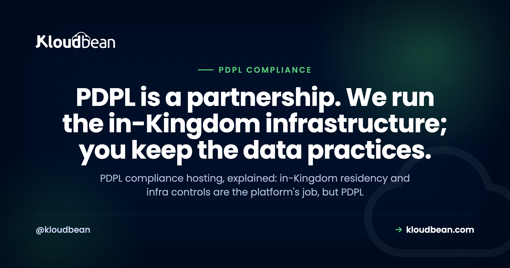

PDPL Compliance Hosting: What Your Host Can and Can't Do

If you sell to Saudi users, bid on a government tender, or hold personal data on anyone in the Kingdom, you've probably typed "PDPL compliance hosting" into a search box and gotten back a wall of vague promises. Most of them hint at the same thing: pick our servers, and you're compliant. That isn't how Saudi Arabia's Personal Data Protection Law works. Hosting solves one real piece of PDPL, and it's an important piece. The rest lives in your app, your policies, and your data habits. This guide draws the line clearly, so you know what a host actually does for PDPL and what stays on your desk.
No, not on its own. Hosting in-Kingdom (on Google Cloud's Dammam region) settles data residency and gives you the infrastructure controls PDPL expects: encryption in transit, access limits, backups. But PDPL also covers lawful basis, consent, data minimization, retention, and data-subject requests, and those stay with you. Treat hosting as the foundation, not the finished building.
What is PDPL? Saudi Arabia's data protection law in plain English
PDPL is the Personal Data Protection Law, the Kingdom's first broad data-privacy law. It's overseen by SDAIA, the Saudi Data and AI Authority, which issues the regulations and guidance that put flesh on the statute. If you've worked with Europe's GDPR, PDPL will feel familiar. It's the Saudi counterpart: a law that governs how personal data about people in Saudi Arabia gets collected, stored, used, and moved.
The core ideas are the ones any modern privacy regime shares. You need a lawful basis to process personal data. You collect the minimum you actually need. You keep it only as long as there's a reason to. People have rights over their own data, including access and correction. And when something goes wrong, there are breach-notification duties and rules on moving data outside the Kingdom. None of that is exotic. But notice something: almost every item on that list is about behavior, not servers. That's the whole tension in "Personal Data Protection Law hosting". A host runs infrastructure. Most of the Saudi data protection law is about what you do with the data once it's there.
So PDPL sits on top of your hosting, not inside it. The platform can make the location and the security posture defensible. It can't decide, on your behalf, whether you had consent to email that customer or how long you should keep an old order record.
Does "PDPL compliant hosting" actually exist?
Yes and no, and the distinction matters more here than on almost any other topic. "PDPL compliant hosting" is fine as shorthand for hosting that supports your PDPL program: data kept in-Kingdom, strong access controls, encryption, backups, an audit trail on the enterprise tier. That's a real, useful thing to buy. What doesn't exist is a host that flips your whole organization into compliance the moment you sign up. No server configuration writes your privacy notice or handles a deletion request.
PDPL compliance hosting is best understood as one input among several. It covers the layer an auditor would call "technical and organizational measures at the infrastructure level". Above that sits your application, your team, and your data practices, and that's where the bulk of PDPL actually lives. A host gives you a hardened, in-country base. You build compliance on it.
Who does what: the PDPL shared-responsibility table
The table below is the article in one grid. Read the left column as what a managed host delivers, and the right column as your homework. Nobody can move an item from right to left by buying a bigger plan.
| PDPL area | Platform provides (infrastructure) | You own (app + process) |
|---|---|---|
| Data residency | In-Kingdom region (GCP Dammam), with the database and backups kept in-region | Deciding what data is in scope, and keeping third-party tools in-region too |
| Encryption | Free, auto-renewing SSL/TLS in transit on every domain | Deciding which sensitive fields need extra encryption inside your app |
| Access control | Subusers, UAC, 2FA, HttpOnly sessions, IP allow-listing | Who you invite, least-privilege roles, removing people who leave |
| Lawful basis + consent | Nothing at this layer. It's a legal and product decision. | A valid basis to process, honest consent, clear privacy notices |
| Data minimization | Storage you control; no requirement to collect anything | Collecting only what you need, not hoarding data by default |
| Retention + deletion | Backups and restore; the ability to delete records you choose | Your retention schedule and actually deleting when it expires |
| Data-subject rights | Access to your own data and logs to build the response | Receiving, verifying, and fulfilling access, correction, and deletion requests |
| Breach response | Access logs, audit trail (Enterprise), backups to recover | Detection, your incident process, and notifying SDAIA and people as required |
Where hosting genuinely helps: PDPL data residency
Here's the part where the host does real, hard-to-retrofit work. PDPL data residency is about where personal data physically sits, and for a lot of Saudi use cases (government-adjacent, financial, health) keeping it in-Kingdom is required or strongly expected. This is the one PDPL problem that's genuinely painful to fix after launch, because moving a live production database between countries under a deadline is nobody's idea of a good week.
On Kloudbean, PDPL hosting in Saudi Arabia means provisioning on Google Cloud's Dammam region, code-named me-central2, which sits physically inside the Kingdom. It's the in-Kingdom option among Kloudbean's seven clouds (AWS, AWS Lightsail, Google Cloud, Linode, Vultr, DigitalOcean, and UpCloud). Be precise about two things here, because marketing tends to blur them. It isn't the sole in-country region on the market, and Kloudbean doesn't own a Saudi data center. What Kloudbean does is provision and fully manage your stack on top of Google Cloud's in-Kingdom region. Providers keep opening in-country regions, so treat the region list in the console as the source of truth and confirm the exact region rather than a vague "Middle East" label. This piece zooms in on PDPL; the broader cloud hosting in Saudi Arabia guide walks through latency, procurement, and the in-Kingdom setup end to end.
Pick that region when you add a server and the residency question is settled at the infrastructure layer. The screenshot below is the moment that matters: the clouds on the left, and Google Cloud's Dammam (me-central2), Saudi Arabia region selectable as the in-Kingdom choice.

Because the stack is managed, in-Kingdom means more than where the app runs. The managed database launches into the same region, locked down with IP allow-listing so only your app server can reach it, not sitting on the open internet for scanners to find. On Enterprise, it can run on a private network (VPC). Backups, which are full copies of your data and the thing teams most often forget, are kept in the same region. That last detail matters: a backup that lands in another country quietly breaks your residency. If the concept itself is new, the plain-English version lives in data residency explained, and the Saudi specifics are in the companion piece on data residency in Saudi Arabia.
The infrastructure controls that support PDPL
Residency is the headline, but PDPL also expects appropriate technical measures around the data. This is where a managed platform saves you a pile of setup, because the controls arrive switched on rather than as a checklist you assemble yourself. Here's the honest scope of what's in the box.
Encryption in transit, on every domain
Every byte between a visitor and your app rides over free, auto-renewing SSL/TLS. No expired certificates, no browser warnings scaring users off. Encryption in transit is the platform's job and it's handled. Encrypting specific sensitive fields at rest, say a national ID or a payment token, is an app-level decision you make in your own code. The platform protects the pipe; you decide what deserves an extra lock inside the payload.
Access controls and least privilege
PDPL cares a lot about who can touch personal data. Kloudbean gives you subusers and User Access Control, so permissions are granular, set per resource and per action. Your junior dev can deploy one app without seeing billing, the database, or twenty other projects. Add two-factor authentication for everyone, HttpOnly cookie sessions so a cross-site scripting bug can't lift a token, and social login that leans on providers who already do the hard identity work. Most breaches you'll ever read about trace back to a leaked credential or a token with more power than it needed. Least privilege is boring and it works.
Baseline hardening and locking down access
Every server ships with a Shorewall firewall and Fail2ban, on from the first minute. Shorewall decides which ports are reachable; Fail2ban bans an IP that keeps failing to log in, which is exactly what a brute-force bot looks like. Want an extra layer? BitNinja is available as an added security option on higher tiers. Treat it as a bonus, not the baseline. And lock the database down with IP allow-listing so only your app server can reach it, never the public internet, which is the single most common self-inflicted wound in hosting.

Backups you can actually restore
Backups belong in any honest PDPL conversation, not just a recovery one. A clean, recent, restorable copy is what saves you from ransomware, a bad migration, or a fat-fingered delete. Kloudbean backs up automatically, and the copies stay in the same in-Kingdom region as the primary. The step almost everyone skips is testing a restore before they need one. Do it once, so the path is proven. A backup you've never restored is a hope, not a plan.

What PDPL still leaves on your desk
This is the right column of that table, and it's where PDPL is actually won or lost. A host can't do any of it for you, so it's worth being blunt about what's yours.
- Lawful basis and consent. You need a valid reason to process personal data, and where you rely on consent, it has to be freely given and specific. That's a product and legal decision, written into your forms and flows, not a server setting.
- Data minimization. Collect what you need for the purpose, and stop there. The platform gives you storage; it never asks you to fill it. Hoarding "just in case" is a PDPL liability, not a feature.
- Retention and deletion. Decide how long each type of record lives, then actually delete it when that window closes. This includes remembering that old exports and backups age out too.
- Data-subject requests. People in the Kingdom can ask what you hold, ask you to correct it, or ask you to delete it. You need a process to receive, verify, and fulfil those requests inside a reasonable time.
- Breach response. Detection, your internal incident process, and notifying SDAIA and affected people where the rules require it. The audit trail and logs help you reconstruct what happened; the response plan is yours.
- Your processors. Every third-party tool that touches personal data (analytics, email, a CRM) is part of your PDPL picture. Keeping the host in-Kingdom doesn't help if you pipe the same data to a service that isn't.
See the pattern? Every one of those is a decision about data, made by a human, documented in a policy. That's the half hosting can't reach, and it's the half an auditor spends most of their time on.
PDPL and NCA ECC: two Saudi frameworks, one shared shape
If you're selling into Saudi enterprise or government, a second acronym shows up next to PDPL: NCA ECC. It helps to keep them straight, because they're often quoted in the same breath but they answer different questions.
PDPL is about privacy: how personal data is handled, overseen by SDAIA. NCA ECC is the National Cybersecurity Authority's Essential Cybersecurity Controls, a security-controls framework. One protects people's data rights; the other sets a baseline for cybersecurity. You can meet the infrastructure parts of both on the same in-Kingdom stack, but they're measured differently, and, just like PDPL, NCA ECC is shared responsibility.
On the platform side, baseline hardening, patching of the managed layer, and (on Enterprise) an immutable, searchable audit trail with CSV export give you real evidence to show an assessor. On your side sit your application's own controls, your written policies, your staff access reviews, and the process discipline to follow them. Neither PDPL nor NCA ECC is a badge a host grants you. The same shared-responsibility logic runs through Kloudbean's secure, compliant hosting hub, and the privacy-law parallel is spelled out in GDPR-compliant hosting, PDPL's closest international cousin.
The honest answer on PDPL certification
Straight talk, because this is where a lot of hosting copy quietly overreaches. Kloudbean provides the infrastructure controls that support PDPL: in-Kingdom residency, encryption in transit, IP allow-listing, least-privilege access, automatic backups, and, on Enterprise, private networking and an audit trail. It does not claim to hold a certification on your behalf, and it does not turn your organization compliant by itself. Certification and attestation are a shared, ongoing effort. Any host that says its servers alone will get you across the PDPL line is describing a shortcut that doesn't exist, and a Saudi assessor will unwind that claim quickly.
What you can lean on is a strong, defensible starting position: your data provably inside the Kingdom, hardened by default, with the evidence an assessor asks for. That's real value. It just isn't the whole job, and honest is the only way to talk about compliance. If you're comparing managed hosts on real posture rather than badges, a like-for-like read such as these Cloudways alternatives is worth more than any logo on a homepage.
A practical PDPL compliance hosting checklist
Two lists, because PDPL is two jobs. The first is mostly a set of clicks. The second is ongoing work only you can do.
The infrastructure half (set it up once)
- Provision your server in the Dammam (me-central2) region so data sits in-Kingdom.
- Launch the managed database into the same region, locked down with IP allow-listing so only your app server can reach it.
- Confirm backups are enabled and staying in-region; restore one to prove it works.
- Force HTTPS and let the free certificate auto-renew.
- Create least-privilege subusers with UAC; turn on 2FA for everyone.
The process half (keep doing it)
- Write down your lawful basis for each kind of processing, and fix your consent flows.
- Set a retention schedule, and actually delete data when it expires.
- Build a repeatable way to handle data-subject requests.
- Have a breach plan that names who notifies SDAIA, and when.
- List every processor that touches personal data, and check where each one stores it.
Get the PDPL foundation right on day one.
Launch in Google Cloud's Dammam region, keep your database and backups in-Kingdom, and run the whole stack from one dashboard, so you can spend your effort on the data practices only you can own. Plans start from $8/mo, Enterprise is custom. Start at kloudbean.com, see options on pricing, and always verify current details there.
In-Kingdom GCP Dammam region · IP allow-listing · Free auto-renewing SSL · Automatic backups · Free migration assistance · Free trial
FAQ
Does hosting in Saudi Arabia make me PDPL compliant?
No, not on its own. Hosting in-Kingdom settles data residency and gives you infrastructure controls like encryption in transit, access limits, and backups. But PDPL also covers lawful basis, consent, data minimization, retention, and data-subject requests, which live in your app and your policies. Hosting is the foundation for PDPL, not the finished compliance program.
What is PDPL and who enforces it?
PDPL is Saudi Arabia's Personal Data Protection Law, the Kingdom's broad data-privacy law. It's overseen by SDAIA, the Saudi Data and AI Authority, which issues the implementing regulations and guidance. PDPL governs how personal data about people in Saudi Arabia is collected, stored, used, and transferred, and it sets out rights for the people that data describes.
Is PDPL the same as GDPR?
Not identical, but closely related. PDPL is often called Saudi Arabia's GDPR because it shares the same core ideas: lawful basis, consent, data minimization, retention limits, data-subject rights, and rules on cross-border transfers. It's its own law with its own details and its own regulator in SDAIA, so you shouldn't assume GDPR steps map one-to-one, but the shape is familiar.
Does PDPL require my data to stay in Saudi Arabia?
Residency expectations depend on the data and the use case. For many government-adjacent, financial, and health scenarios, keeping personal data in-Kingdom is required or strongly expected, and there are rules governing transfers outside the country. Hosting in the Dammam region settles the location question. Whether your specific case demands it is a question for qualified counsel.
Which cloud region is inside Saudi Arabia?
On Kloudbean it's Google Cloud's Dammam region, code-named me-central2, a region physically located in Saudi Arabia. It's the in-Kingdom option among Kloudbean's seven clouds. It isn't the sole in-country region on the market, and Kloudbean owns no Saudi data center, so always confirm the exact region in the console rather than trusting a Middle East label.
Can a host certify me for PDPL?
No host can grant your organization a PDPL certificate or do your compliance for you. A platform provides the infrastructure controls that support PDPL, such as in-Kingdom residency, encryption, access controls, and backups. Certification and attestation are a shared, ongoing effort, and the app-level and process requirements always remain yours. Be wary of any host that claims otherwise.
What is NCA ECC, and how is it different from PDPL?
NCA ECC is the National Cybersecurity Authority's Essential Cybersecurity Controls, a security-controls framework used widely in Saudi enterprise and government. PDPL is about data privacy; NCA ECC is about cybersecurity baselines. They're quoted together often, but they answer different questions, and both are shared responsibility between the platform and you.
What PDPL responsibilities are mine, not the host's?
Everything about how you handle data. That means your lawful basis and consent, collecting only what you need, your retention schedule and deletions, fulfilling data-subject requests, your breach-response process and any notifications to SDAIA, and vetting every processor that touches personal data. The host secures the infrastructure; these decisions are yours.
Do I need in-Kingdom hosting for PDPL?
For many Saudi use cases, in-Kingdom hosting is required or strongly expected, especially for sensitive or government-adjacent data. It settles residency, which is the part that's genuinely hard to fix after launch. But PDPL is broader than location, so in-Kingdom hosting is necessary in those cases without ever being sufficient on its own.
Is this article legal advice?
No. It's a map of how PDPL responsibilities split between a hosting platform and you, meant to help you plan. It isn't a substitute for advice from someone qualified in Saudi data protection law. For a real compliance program or a high-stakes tender, confirm the specifics with a professional before you rely on them.